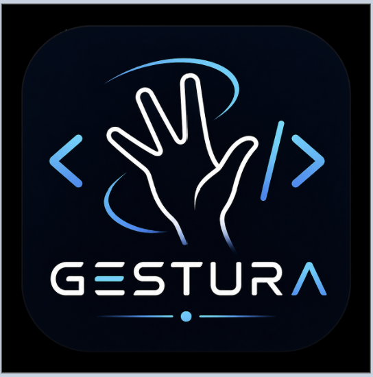

A gesture-based interpreted programming language
Gestura is a custom programming language that uses hand gestures instead of traditional typed commands. A webcam captures the user’s hand, MediaPipe tracks hand landmarks, and the interpreter converts recognized gestures into programming commands.
The goal of Gestura is to explore programming as a more physical, visual, and interactive experience.
1. Camera Input: OpenCV opens the webcam and captures live video.
2. Hand Tracking: MediaPipe detects and tracks 21 hand landmarks.
3. Gesture Recognition: Live hand data is compared to saved gesture samples in gesture_data.csv.
4. Tokenization: Gestures become tokens like SET, PRINT, NUMBER, and OK.
5. Parsing & Execution: Tokens are parsed into valid program structures and executed by the interpreter.
Supports variables (x, y, z, w, v) and numeric input.
Print variables and strings using gesture commands.
Supports WHILE loops and iteration using END blocks.
Supports IF, ELIF, and ELSE statements.
Supports +, -, *, /, % and comparison operators.
Supports INC and DEC operations on variables.
Write and execute programs using .gestura files.
Runs programs using gestura_main.py.
| Gesture Token | Meaning |
|---|---|
| SET | Start variable assignment |
| Start print command | |
| NUMBER | Enter number input mode |
| ONE, TWO, THREE, FOUR, FIVE | Used as variables or number values |
| A-Z | Used to build printable strings |
| OK | Confirm or execute a command |
SET x = 5
Gesture sequence:
SET → ONE → NUMBER → FIVE → OK
PRINT x
Gesture sequence:
PRINT → ONE → ONE
PRINT "HELLO"
Gesture sequence:
PRINT → TWO → H → E → L → L → O → OK
SET(X, NUMBER(1)) OK
SET(Y, NUMBER(1)) OK
WHILE(x <= 5) OK
PRINT(Y) OK
INC(X) OK
INC(Y) OK
END
SET(X, NUMBER(1)) OK
WHILE(x <= 15) OK
IF(x % 15 == 0) OK
PRINT("FIZZBUZZ") OK
ELIF(x % 3 == 0) OK
PRINT("FIZZ") OK
ELIF(x % 5 == 0) OK
PRINT("BUZZ") OK
ELSE OK
PRINT(X) OK
END
INC(X) OK
END
This program demonstrates loops, conditionals, modulo operations, and incrementing variables using Gestura syntax.
git clone https://github.com/Jayden-Amjed/Gestura.git cd Gestura py -3.12 -m venv .venv .venv\Scripts\Activate.ps1 pip install opencv-python mediapipe==0.10.13 python gestura_live5.py python gestura_main.py fizz_buzz.gestura python gestura_main.py count_loop.gestura python gestura_main.py print_var.gestura
The full interpreter, gesture recorder, recognizer, and dataset are available on GitHub.